新版奶燃火，取色简单，自动书页判断 7.30优化版
慰籍咒语，潜能咒语，学识咒语|决心圣书，正义圣书，勇气圣书，退出F1，退出F2，退出F3，不在书页=F2治疗，不在书页=F3保护，不在书页=F1威能，法杖3，法杖2，法杖4|慰籍咒语，潜能咒语，学识咒语|
慰籍咒语,e|潜能咒语,x|学识咒语,c|决心圣书,f2,150|正义圣书,f1,150|勇气圣书,f3,150|退出F1,f1,350|退出F2,f2,350|退出F3,f3,350|不在书页,,,,,,,,,ifnot|F2治疗,f2,150,3,780,2,680,,,,,,,,,,,,,触发,1,9000|F3保护,f3,150,1,300,,,,,,,,,,,,,,,触发,1,11000|F1威能,f1,150,5,550,,,,,,,,,,,,,,,触发,1,21000|法杖3,3,483|法杖2,2,601|法杖4,4,2638
[&DQExKi4qPj5LF0sXehZ6FlMXUxctAS0BGBYYFgAAAAAAAAAAAAAAAAAAAAADWQAFAFcAAA==]
诗人+猎兔，单法杖，转移 专注 午夜国王\僧侣这套奶燃火是基于最新版的部分条件编写，下面讲解一下原理。
最新优化版方案循环已优化，可直接导入，优化细节可看文章底部。
决心圣书，正义圣书，勇气圣书，退出F1，退出F2，退出F3，F1威能，F2治疗，F3保护，法杖3，法杖2，法杖4
循环中包含上面的几个部分，拆开来看。
1，决心圣书，正义圣书，勇气圣书，这几个的意思是获取f1 2 3 本身的颜色，当可用直接触发，不使用任何跟随按键，只作为buff触发的条件，
然后通过退出F1 F2 F3来实现快速退出。
退出F1、2、3分别获取箭头的白色。
2，F1威能，F2治疗，F3保护
这里采用的是，跟随按键+内置cd的条件来实现判断。
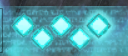
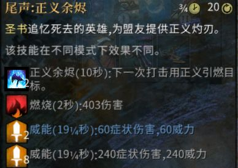
比如，F1威能，实现的是每隔20秒，按一次F1-5的技能。
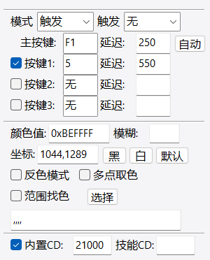
那么添加内置21秒的cd
取色第一个书页的位置，表示满足5技能的释放，至少需要1个书页。
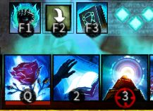
F2治疗，采用的是每隔9秒，使用一次3技能+2技能。
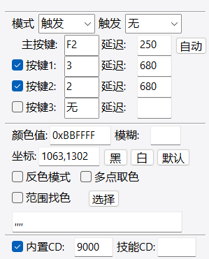
F2，跟随的是2个按键，所以需要获取2书页的位置。
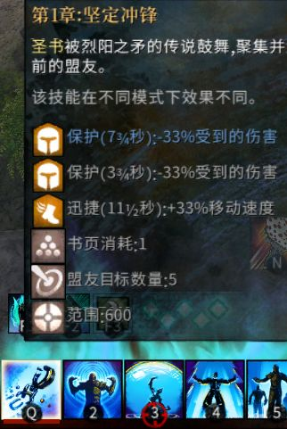
F3保护，就简单了，同样也是只需要1个书页，那么优先级放到F2治疗后面，
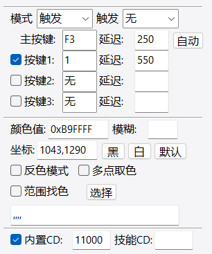
你会发现保护7+3能维持10秒，所以内置cd改为11。
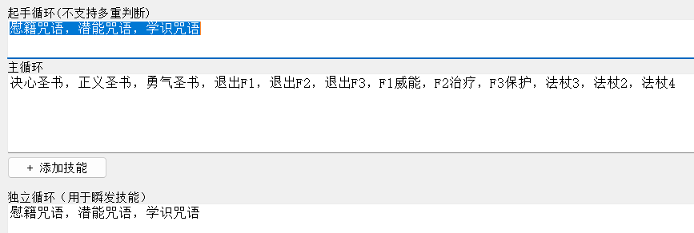
最后就是法杖3的光圈优先，然后是法杖2，法杖4这样排序。
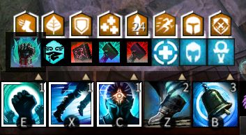
这样一套下来就能实现自动判断buff，有书页就会自动放F1 2 3，直接通过内置cd实现判断。
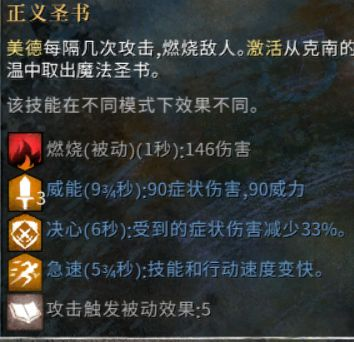
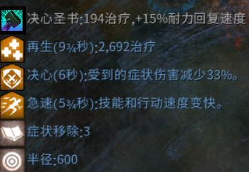
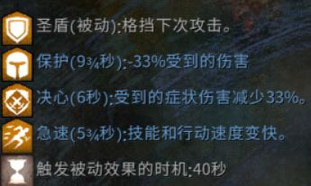
F1、2、3图标本身，只是用来触发F1、2、3被动效果的。
实际使用书页内的技能，是书页1豆-2豆这些条件。
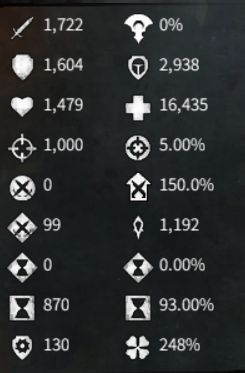
以上是基于最新版本制作的奶然，有问题楼下留言。
最新优化版方案
循环方面调整了下优先级
决心圣书，正义圣书，勇气圣书，退出F1，退出F2，退出F3，不在书页=F2治疗，不在书页=F3保护，不在书页=F1威能，法杖3，法杖2，法杖4
这里，把治疗>保护>威能，同时加入了不在书页的判断，防止在书页中，误触按键。
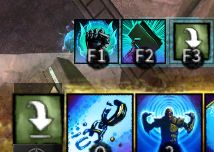
不在书页取切武器这里的，进入书页后的白色箭头，表示不在F1、2、3才使用F1\2\3这种跟随按键。
~
另外，F2消耗2个书页，F3消耗1个，F1消耗1个
那么在文章之前的基础改一下
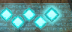
F2取第三个豆子
F1、F3取第二个豆子，留一个书页作为备用。
评论列表（11）
大佬、有点没看懂 能出个视屏么 o(╥﹏╥)o
你们激怒用的啥，我把斧2加了进去
大佬来个新版的急速诗人吧，那个简单点
以前用了一段时间燃火，那个法杖4会自动罚站，走位有时候会被坑，后来就全用幻术了
F1 威能F2治疗F3保护，这些是取色哪个
@1 1豆2豆 书页内是消耗多少 就取多少个豆 左边开始算
@melis 呃，不在书页这个循环，连带的技能不放
@有言在先 这已经很简单的判断了，自己测试
一周没上来了，M佬如此高产，你是我坚持玩激战2的动力了，哈哈哈哈
想啥来啥 爱死你了 m大 哈哈哈哈
666什么时候出急速症状燃火,其他分支台蹦跶了